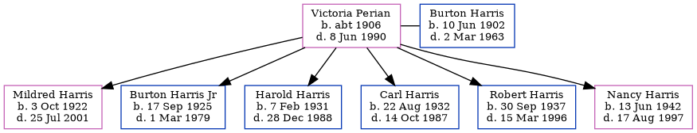

Victoria Betty Harris (née Perian) c1906 - 1990
[ Home ] | [ Calendar ] | [ Surnames Index ] | [ Family History ]Victoria Perian, the wife of Burton Franklin Harris (the fourth cousin twice-removed on the mother's side of Nigel Horne), was born in Austria c. 19061 and married Burton (a truck driver with whom she had 6 children: Mildred Betty, Burton Franklin, Harold Leon, Carl V, Robert Rudolph and Nancy Marie) in Boswell, Somerset, Pennsylvania, USA on Mar 1, 19212.
Throughout her life, she lived at 217 Duck Street, Fort Wayne, Allen, Indiana, USA on Apr 1, 19303; and at 2318 Curdes Avenue, Fort Wayne, Indiana on Apr 12, 19401.
She died on Jun 8, 1990 in Fort Wayne, Indiana.
Children
- Mildred Betty was born on Oct 3, 1922
- Burton Franklin was born on Sep 17, 1925
- Harold Leon was born on Feb 7, 1931
- Carl V was born on Aug 22, 1932
- Robert Rudolph was born on Sep 30, 1937
- Nancy Marie was born on Jun 13, 1942
Citations
- US Census 1940 - Findmypast (was age 35 and the wife of the head of the household)
- United States Marriages - Findmypast
- US Census 1930 - Findmypast (was age 26 and the wife of the head of the household)
Media
Burton Harris - Victoria Perian - marriage licenc

US Census 1940 - USC/1940/1456414439
United States Marriages - US/FS/M/022951043/2
Family Tree
Generated by ged2site. Last updated on Nov 13, 2024